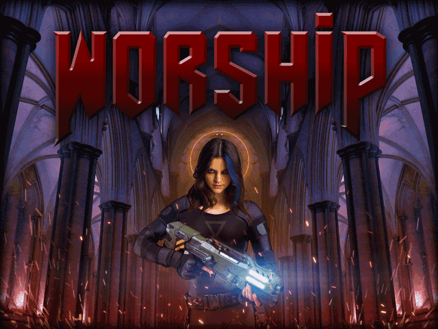
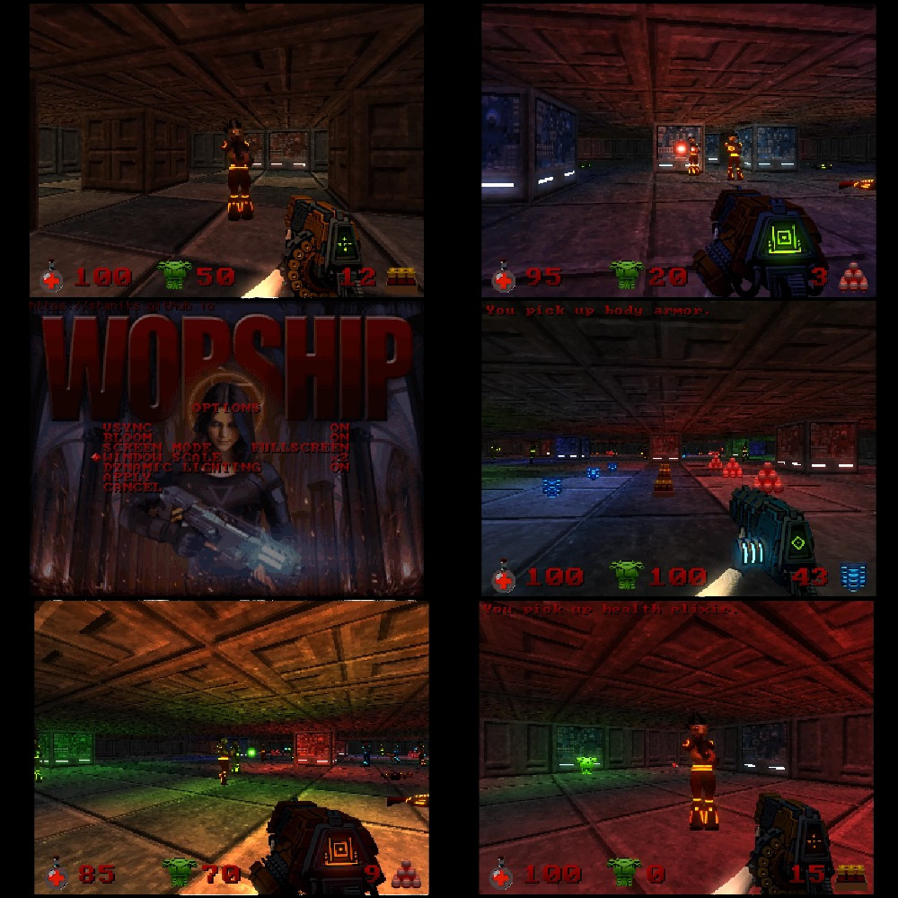
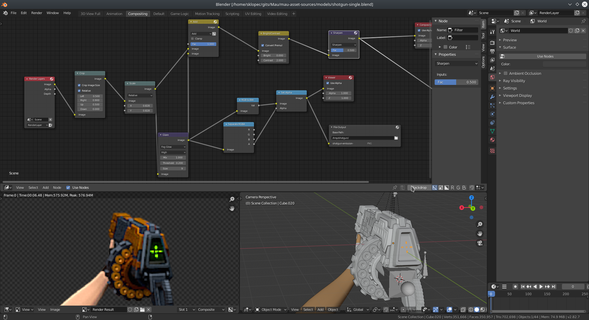
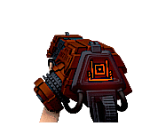
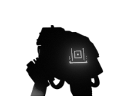
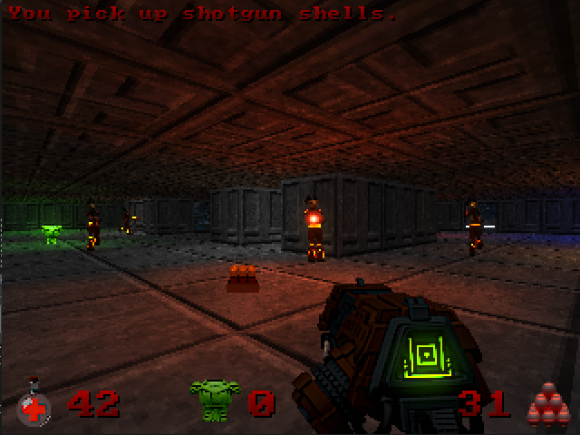
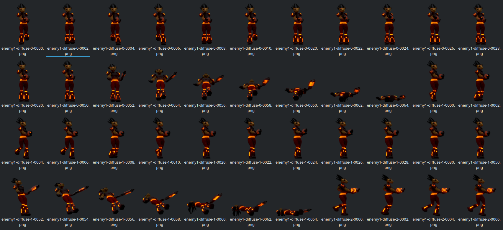

Software Engineer

Worship is a small first-person shooter game I've been developing in my spare time for fun. While it was originally intended as a sequel to my parody raycaster, I have decided to decouple the games, while keeping most of the finished game assets. I deliberately constrained the game to render at 320x240 to see how much I can squeeze at such limitations.
Game features:
Since the game is an experiment, there's basically no story or ending condition at all.

The game is powered by Mau framework, a simple set of libraries and tools I'm making so I can reuse parts of my projects. Completed set of features includes:
While the framework is still heavily in development, pet projects like these help me notice flaws and make incremental changes and redesigns.
You can grab the source at: https://github.com/staniks/worship-mirror.
Clone the repository. You'll need SDL2 and SDL2_mixer packages. Within the root of the project, run:
mkdir build
cd ./build
cmake ..
Before running the game, you'll need the data archive. You can either compile it yourself or download it from the releases section along with the binaries. If you want to compile the assets yourself, you will need Pillow (Python imaging library) which is used by the texture converter.
python3 compile-assets.py [--skip-textures]
As you've probably noticed, most of the assets are actually pre-rendered sprites. This is a technique used since ye olde times and seems to have made a sort of comeback with recent titles like Ion Fury.

The workflow I used for this project is simple:
Remember the DOS era, where games usually had their assets packed in some sort of binary blobs? For example, Doom's WAD files or Quake PAK archives. I wanted to do something similar for this project, so I made a small archive format. The structure is really simple:
Resource descriptors contain:
Resource type helps the framework determine how to instantiate the asset during preloading sequence. Most resources are preloaded during game startup since they're small and relatively cheap to hold in memory. If you look at the source code, there are several Python scripts which are used to prepare assets and compile them into the archive. They're not particularly robust or fast, but it was good enough for this use-case.
Checksum is there just to tell the engine not to even bother instantiating the resource if the file was somehow corrupted or casually tampered with.
There's no compression or obfuscation of any kind, so if you open up the archive with a hex editor, you could even figure out the format structure without even looking at the structs.
If you look into the data/ directory, you'll notice most textures have been split in two flavors:
Diffuse textures contain color information, like so:

Emission textures contain brightness information.

This allows us to display parts of texture with brightness regardless of current lighting, and thus give impression that something is glowing in the dark, especially when coupled with the bloom shader.

Enemies change their sprite based on their direction and the location of the player in an attempt to give the impression of a 3D object. As you might expect, this is somewhat expensive in terms of memory usage, but works rather nicely.

For level editing I used Tiled. It's free, cross-platform and general-purpose. It exports a JSON file which is easy to parse and even supports plugin creation for custom exporters.
Tile-based level layout makes a lot of things simple, including occlusion culling. So I did someting similar to what Wolfenstein 3D did - performed a raycast for every screen column and checked which chunks the ray has traversed.
By chunks, I mean regions of tiles. The level consists of tiles, but the engine divides the level into "chunks" because of batching. Batching is done per chunk to minimize draw calls. Basically, instead of telling GPU to draw tiles one by one, we tell it to draw a bunch of them at once, and this is much faster.
I wrote about the simple static lighting algorithm I use in a blog.
Apart from the static lighting, object are lit by dynamic lights as well. Pickups, projectiles, explosions and particles emit faint glow which helps them stand out from the scenery. It's a forward lighting approach - each chunk or object can be lit by up to N nearest point lights. There is some overhead in calculating which of the lights should be taken into account, but it doesn't impact performance much.
Where do I even start?
I've littered the code with TODO comments in case someone is looking for a challenge. Issues range from simple ones like this...
namespace mau
{
// Returns adler32 checksum of given data.
// TODO: refactor to use mau::span
uint32_t adler32(byte_t* data, size_t size);
}
...to more complex ones, like refactoring the spatial partitioning and collision detection systems.
I'm not particularly satisfied with the way I wrote the renderer, it feels a somewhat inefficient, especially the batching part. I'll definitely be looking into literature again for this one. I'm not happy with the way I wrote shaders either, and that's something I also plan on tackling soon.
Do whatever you want as long as you respect the GNU GPLv3. Create a story campaign. Create more levels. Make the grenade launcher fire rubber ducks instead of grenades. Create a battle royale spinoff.
Also, while most of the other assets were created by me, the sounds were not - they have separate licenses themselves. Look into data/sounds for more info.
It's not mandatory, but if you ever make something off of this, I'd seriously like to hear from you. Tweet me @Sklopec.